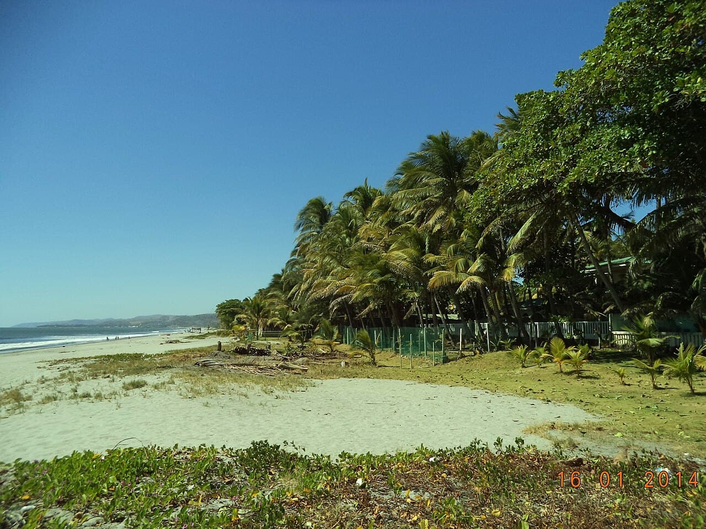

Punta Roca — La Libertad
Salvador · surf

La droite de référence d'Amérique centrale : un point break rapide qui déroule sur les rochers de La Libertad.
- Lieu
- Salvador
- Niveau
- Intermédiaire
- Activités
- surf
- Type d'eau
- Mer / océan
- Coordonnées
- 13.49, -89.32 (position approximative du secteur)
Dangers à connaître
- Fond rocheux.
- Vague rapide.
Le conseil d'Ocean Buddy
Belle droite de pointe ; entrée par les rochers, chausse-toi bien.
Ouvrir dans Ocean Buddy Télécharger sur l'App Store
Source : Description historique Ocean Buddy · vérification externe en attente.